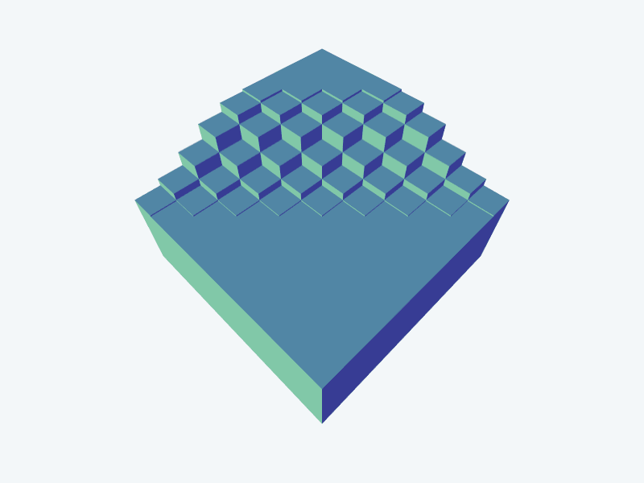
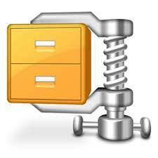

Procesamiento Digital de Imágenes
El Procesamiento Digital de Imágenes (PDI) es una disciplina de la informática que se enfoca en el tratamiento y manipulación de imágenes digitales con el objetivo de mejorar su calidad, extraer información útil, o realizar análisis automatizados.

Disfruta de la música mientras exploras este contenido.
El Procesamiento Digital de Imágenes es una rama de la informática que se ocupa de la manipulación de imágenes digitales mediante algoritmos y técnicas matemáticas. Se utiliza en una amplia gama de aplicaciones, desde el mejoramiento de imágenes médicas hasta el reconocimiento de patrones en imágenes de satélite.
Principales Pasos en el Procesamiento Digital de Imágenes:
1. Adquisición de Imágenes:
El proceso comienza con la captura de una imagen a través de un dispositivo como una cámara digital, escáner o satélite.2. Preprocesamiento:
Esta etapa implica la corrección de problemas en la imagen, como el ruido, la iluminación irregular y la distorsión. Se utilizan filtros y técnicas de mejora de contraste para mejorar la calidad de la imagen.3. Segmentación:
La segmentación se refiere a la división de la imagen en regiones o elementos individuales. Puede ser útil para identificar objetos de interés en una imagen.4. Extracción de Características:
En esta etapa, se extraen características relevantes de las regiones segmentadas, como bordes, texturas, colores y formas. Esto es crucial para análisis posteriores.5. Procesamiento de Características:
Aquí se aplican algoritmos para realizar tareas específicas, como reconocimiento de patrones, detección de objetos, seguimiento de movimiento, entre otros.6. Postprocesamiento:
En esta fase, se aplican filtros o ajustes adicionales para refinar la imagen o los resultados del procesamiento.
Aplicaciones del Procesamiento Digital de Imágenes:
1. Medicina:
Para diagnóstico médico a través de imágenes de rayos X, resonancia magnética y tomografía computarizada.2. Visión por Computadora:
Para reconocimiento facial, detección de objetos, vehículos autónomos y más.3. Satélites y Teledetección:
Para analizar imágenes satelitales y obtener información sobre la Tierra, como cambios en el uso de la tierra y el clima.4. Industria y Control de Calidad:
En la inspección de productos y procesos de fabricación.5. Arte y Entretenimiento:
En efectos especiales de películas, generación de gráficos por computadora y edición de imágenes.
Tecnologías y Herramientas Comunes:
* Python con bibliotecas como OpenCV y Pillow.* MATLAB para aplicaciones de procesamiento de imágenes.
* Software de diseño gráfico como Adobe Photoshop.
Desafíos en el PDI:
* Tratamiento de ruido en imágenes.* Segmentación precisa en imágenes complejas.
* Diseño de algoritmos de aprendizaje automático para tareas de reconocimiento.
* Eficiencia computacional para procesar imágenes en tiempo real.
Procesamiento Digital de Imágenes es una disciplina multidisciplinaria que combina conocimientos de matemáticas, informática y óptica. Su aplicación es fundamental en la sociedad moderna y continúa evolucionando con avances tecnológicos como el aprendizaje profundo (deep learning) y la inteligencia artificial.